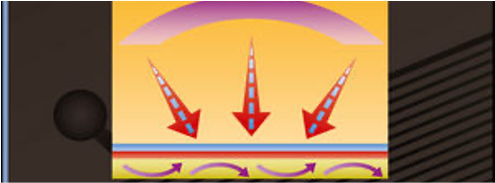

01 / Teaching
Heat Transfer Classes
ME314 introduces students to the various processes of heat transfer. ME414/614 covers classical approaches to solving complex heat transfer problems. ME714 delves into advanced theories and modeling techniques for addressing heat transfer challenges.